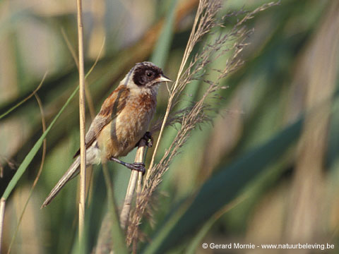

BuidelmeesRemiz pendulinus

- Grootte
- L 11cm
- Biotoop
- Gebonden aan moerassen met wilgen en berken.
- Kenmerken
- Kenmerkend zwart masker, bij vrouwtje iets kleiner. Bouwt groot, buidelvormig naast, dat aan boven water hangende takken bevestigd wordt.
- Trek
- Van april tot oktober aanwezig.
- Aantallen
- Zeldzaam!